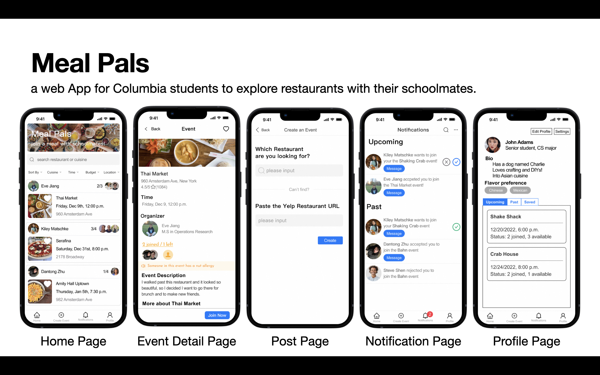
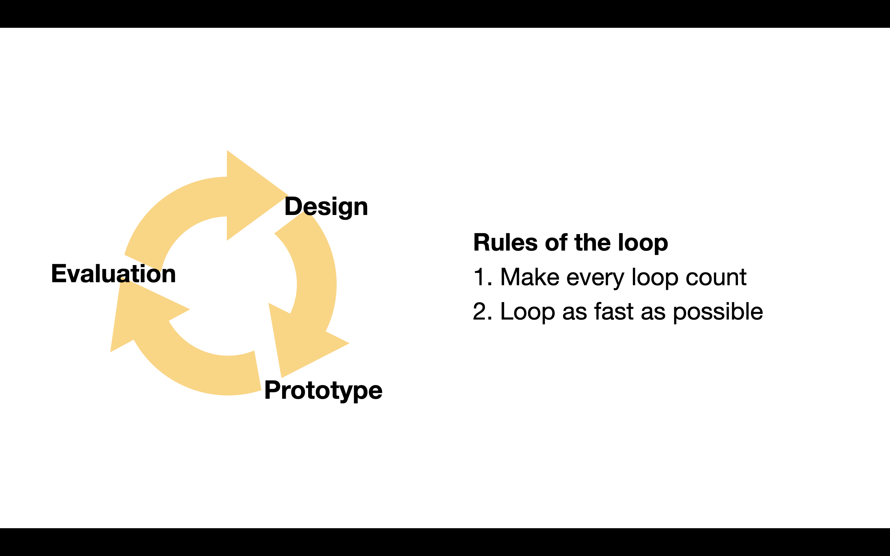
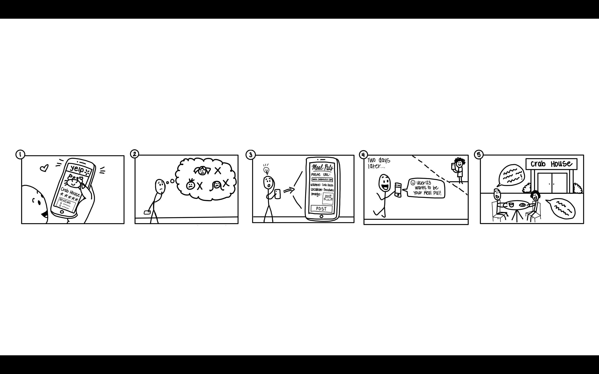
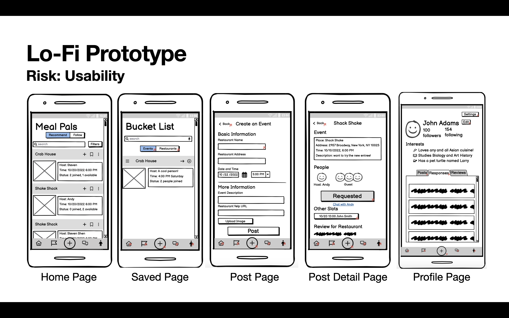
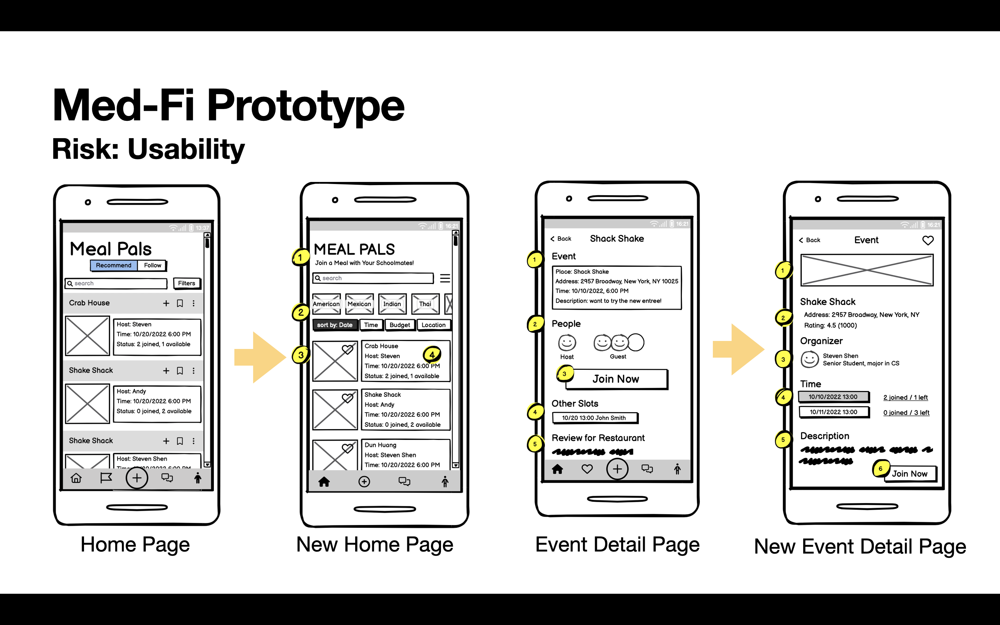
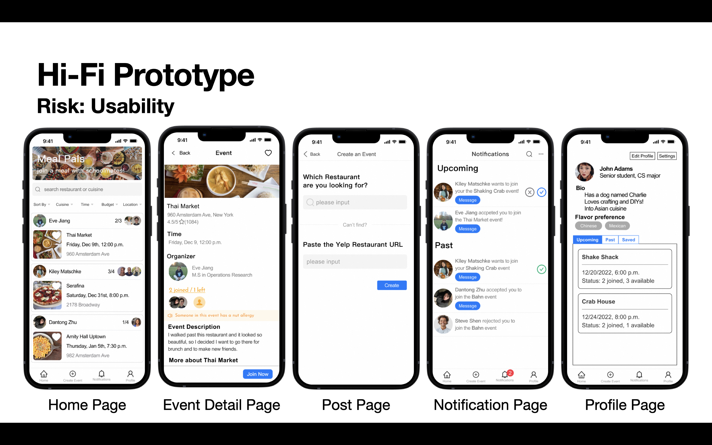

Meal Pals¶
2022.09-2022.12

Overview¶
Meal Pals is a web App for Columbia students to explore restaurants with their schoolmates. It’s a semester project of COMS 4170 User Interface Design taught by prof. Brain A. Smith at Columbia University. We went through several loops of design - prototype - evaluation to build a demo with usefulness and usability.
Solution¶
Meal Pals is an App for Columbia students to explore, join, publish, organize, and communicate their meals with other Columbia students.
- Explore = Home Page. Users can find a meal via search or recommendation.
- Join = Event Detail Page. Users can check, join and cancel an event.
- Publish = Post Page. Users can create an event for a restaurant.
- Organize = Profile Page. Users can find all events they have already posted, joined and saved. They can also edit their profiles and preferences.
- Communicate = Notification Page. Users can accept/reject and chat with other users.
Design Process¶
The idea of Meal Pals came from brainstorming among 60 ideas. After that, we went through many loops of design, prototype and evaluation, keeping in mind two rules: make every loop count by testing the biggest risks, and loop as fast as possible.

Needfinding¶
- Biggest Risks: Whether people are comfortable dining out with strangers, and how can we get into their current flow?
- Actions: We did the contextual inquiry on two users which is a mix of interviewing and observing users in their actual work environment.
- Insights:
- Safety concern is the bottom line of dining out with strangers, so we restrict users to CU students.
- Exploring new food and restaurants is not an urgent thing, leaving a room for asynchronous matching.
- People want to find common interests in advance to avoid awkward situations, and it’s more comfortable going with a group of people rather than 1-on-1.

Lo-Fi prototype¶
-
Biggest Risks: How can we design a flow that help users to explore, join, post, organize, and communicate their meals with others?
-
Actions: We drew the Lo-fi prototype using Balsamiq, a fast and collaborative wireframing tool. Then, we prepared a list of tasks for users to perform and used a questionnaire to pre-screen volunteers. Finally, we ran two user tests and took note of their behaviors.
-
Insights: It not only helped to gauge the effectiveness of our current solution but also let us realize some DKDK (you don’t know what you don’t know) problems. For example, we previously thought the profile page was an obvious place to store events relevant to the users. However, some users hesitated and wandered around. One of the reasons could be different mappings of our App in the user’s mind: functional vs. social. Typically, the profile page for functional Apps is used for settings, while for social Apps is used for display users’ activities.

Hi-Fi prototype¶
-
Biggest Risks: How can we better guide users toward their goals?
-
Actions: We improved the Lo-Fi in two ways. The first is increasing attractiveness. We added more “people” and “social” elements on the home page to make our App looks more friendly. The second is reducing barriers. Regarding to information design methods, we reorganized the visual hierarchy and grouping on every page. As for evaluation, we conducted a user study as usual, but this time we only gave the user a context and the mockup, and see how well they could reach their goal.
 
Implementation¶
Paralleling with Hi-Fi Prototype, we coded Meal Pals using React and the Material UI component library. Go to our GitHub repository for details.
Takeaway¶
1. UI Design = Engineering Usefulness & Usability
- UI design is the process of making computer system useful and usable to people
- Usefulness is defined by users. You should observe the context and stand in your real user’s shoes
- Nelson’s 10 usability heuristics is a good reference for usability.
2. Tips for creating Lo-fi prototype
- Any tools work as long as it’s low-cost. Paper is a common tool, but if you have an existing design system, it’s also a good choice.
- It can be simple, but it should be consistent to avoid confusing your team and users.
- stay with the Lo-Fi prototype as long as possible because it’s easy to throw away.
3. Tips for evaluation
- Multiple alternatives generate better feedback because people offer more criticism by comparing.
- Apply UCD (user-centered design) to user study. Get their consent before the test, ask them to think aloud during the test, and give them feedback.
4. Principles of Visual Information Design
- Information display should guide users toward goals.
- leave scents and only include what is needed.
- Visual hierarchy should reflect the goal and relative importance.
- Group similar information into chunks via proximity, similarity, enclosure, etc.
- Ensure different chunks for a clear hierarchy via size, position, negative space, images, and color.
5. How to build trust within App
- Think you are the App. What would you do manually to make the matching happen?
- Study similar products, such as marketplaces like Airbnb, about how they change over time and why.
Learn more¶
Team¶
- Designer: Yiyi Jiang, Kiley Matschke
- Developer: Dantong Zhu, Aparna Kumar